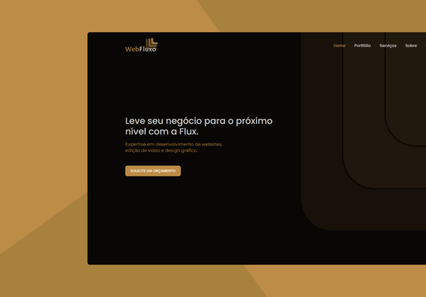

Olá! Meu nome é Pablo 👋
Sou um Desenvolvedor Front-end de 23 anos com paixão por programação e um forte desejo de continuar aprendendo.
Cada desafio é uma oportunidade de crescimento para mim, e estou sempre buscando melhorar minhas habilidades técnicas e interpessoais.
Acredito que a colaboração é essencial para o sucesso.
Tecnologias
Tecnologias que uso em meus projetos, e que tenho conhecimento.
- HTML
- CSS
- JavaScript
- TypeScript
- React
- Tailwind
- NodeJs
- Figma
- WordPress
Projetos
Projetos que eu estou desenvolvendo atualmente, ver mais projetos.

WebFlux
Soluções modernas em WordPress para destacar sua marca online com design exclusivo e performance otimizada.